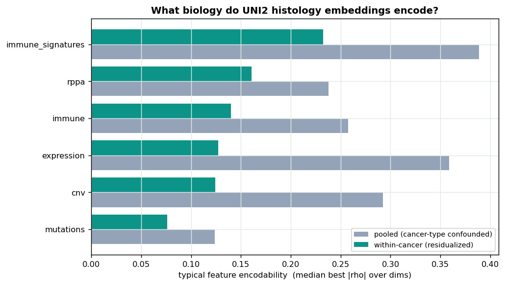
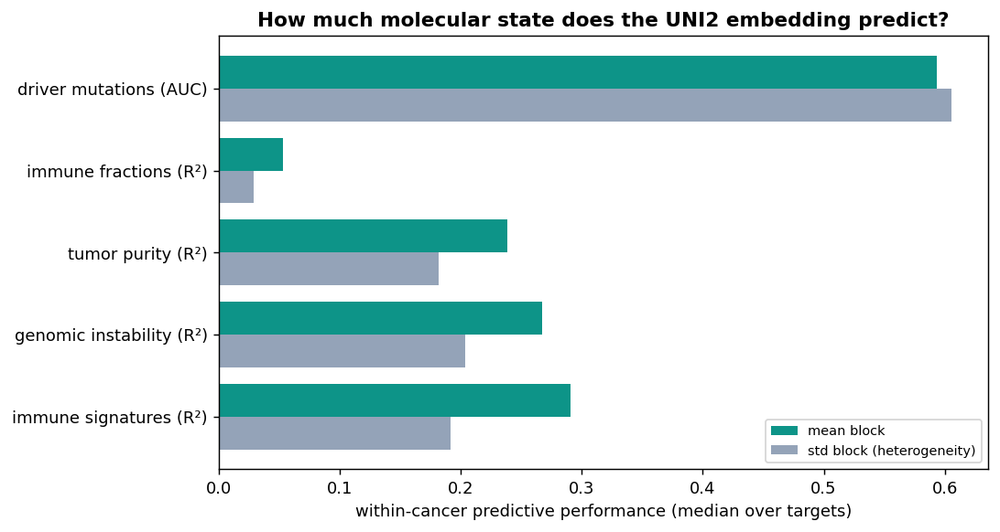
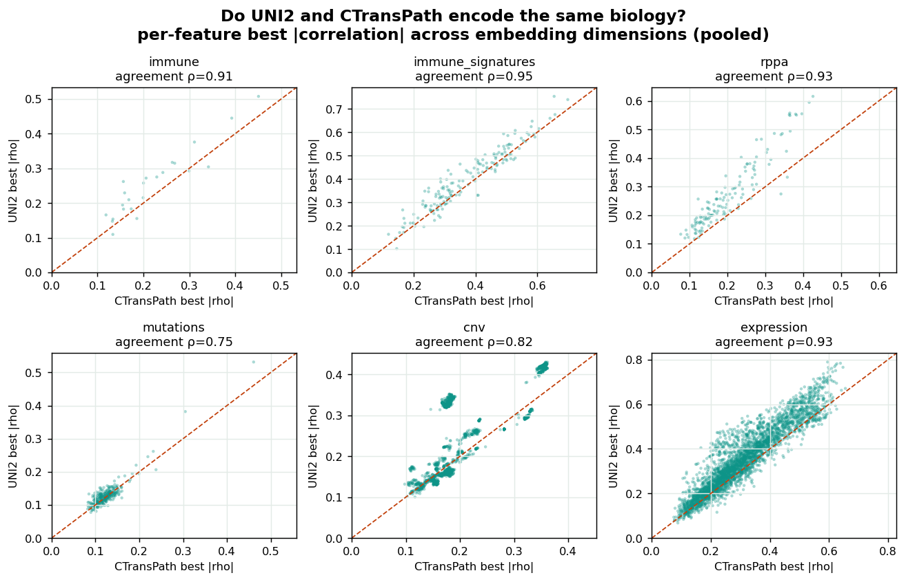

What does the embedding actually encode?
Each slide becomes 1,536 numbers from the UNI2 foundation model, but what do those numbers mean? To find out, every embedding dimension was correlated against the tumor's molecular data (gene expression, mutations, copy number, protein levels and immune composition) across roughly 1,800 patients. The short answer: these histology features read out the tumor's microenvironment and expression state far more than its specific mutations.
How we asked the question
Using the lab's TCGA multi-omics tables, each patient's UNI2 slide vector was lined up with their molecular profile. For every pairing of an embedding dimension with a molecular feature we computed a Spearman correlation, with Benjamini-Hochberg control for the huge number of tests. Each correlation is reported two ways:
- Pooled: across all patients at once. This is optimistic, because a dimension that simply separates colon from liver tumors will correlate with anything that also differs between those cancers.
- Within-cancer: cancer type is statistically removed first (the same honesty step used for the pooled survival model), leaving the signal that holds inside a single cancer. This is the trustworthy number.
Microenvironment and expression, not mutations
The chart below shows how strongly UNI2 encodes each kind of molecular data: for every feature we take its best correlation across all dimensions, then the typical (median) value across features. Pooled bars are always taller, confirming the cancer-type confound. The within-cancer bars are the real story.

Counting the dimension-feature pairs that stay significant within cancer type makes the ranking concrete:
| Molecular data | Within-cancer significant pairs | What it captures |
|---|---|---|
| Gene expression | 429,236 | transcriptional / epithelial programs |
| Copy-number | 376,276 | broad genomic-instability burden |
| Immune signatures | 124,012 | immune / microenvironment programs |
| RPPA proteins | 33,724 | protein abundance |
| Immune cell fractions | 5,078 | leukocyte / immune infiltration |
| Mutations | 62 | almost nothing within cancer type |
The pattern is biologically sensible. Immune infiltration, tissue architecture and overall expression state leave visible marks on an H&E slide, so the embedding picks them up. A single point mutation usually does not change how the tissue looks, so once cancer type is removed almost no mutation signal survives (62 pairs, versus hundreds of thousands for expression). The strong pooled mutation hits are really the embedding recognising cancer type.
How much can the whole embedding predict?
The numbers above are one dimension at a time. But biology is usually spread across many dimensions, so the stronger question is: train a model on all 1,536 dimensions at once and see how much of a molecular readout it can predict. Using cross-validated ridge regression (cancer-stratified, scored within cancer type), the embedding turns out to be a genuinely good molecular predictor for everything except mutations.

| Molecular readout | Within-cancer predictive score | note |
|---|---|---|
| Immune signatures | R² 0.29 | microenvironment programs |
| Genomic instability | R² 0.27 | TMB, aneuploidy, subclonal entropy |
| Tumor purity | R² 0.24 | tumor vs normal-tissue content |
| Immune cell fractions | R² 0.05 | individual cell types are noisy |
| Driver mutations | AUC 0.59 | barely above chance |
A within-cancer R² near 0.3 is far above what any single dimension reaches (best single-dim r² ≈ 0.06), so the molecular signal really is distributed across the embedding. Notably, the model reads out genomic instability (mutation burden, aneuploidy) from appearance alone, even though it cannot call the individual mutations.
Two models, the same biology
Is this a quirk of UNI2, or a property of histology itself? The mentor's lab ran the same analysis with a different foundation model, CTransPath, on the same slides. Because the two models have different dimensions, we compare them per feature: how well does the best dimension of each model encode a given molecular feature? If the two agree, they are reading the same underlying biology.

They agree closely. The rank correlation between the two models' per-feature encodability is high across the board, which means the molecular signal in a histology embedding is largely a property of the tissue, not of any one model.
| Molecular data | UNI2 ↔ CTransPath agreement (Spearman) |
|---|---|
| Immune signatures | 0.95 |
| RPPA proteins | 0.93 |
| Gene expression | 0.93 |
| Immune cell fractions | 0.91 |
| Copy-number | 0.82 |
| Mutations | 0.75 |
Agreement is weakest for mutations (0.75), which fits the picture above: both models encode mutations only weakly and noisily, so there is less stable signal to agree on.
How to read this
- These are correlations, not proof that the model "sees" a gene; a dimension may track expression because both follow tissue morphology.
- Results use the mean aggregation and the 8-cancer cohort; the within- cancer numbers are the honest ones, the pooled numbers carry cancer-type confounding.
- CTransPath is a separate foundation model analysed by the mentor's lab on the same slides; the molecular tables are TCGA data that lives outside this repository.